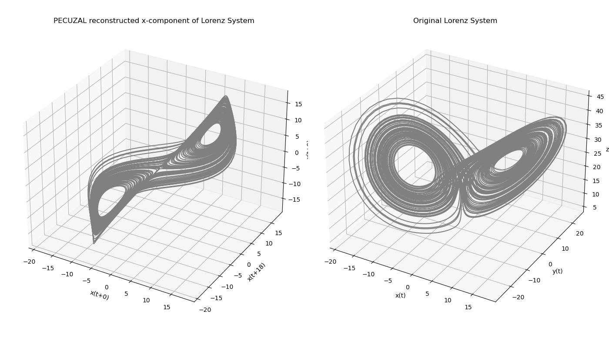
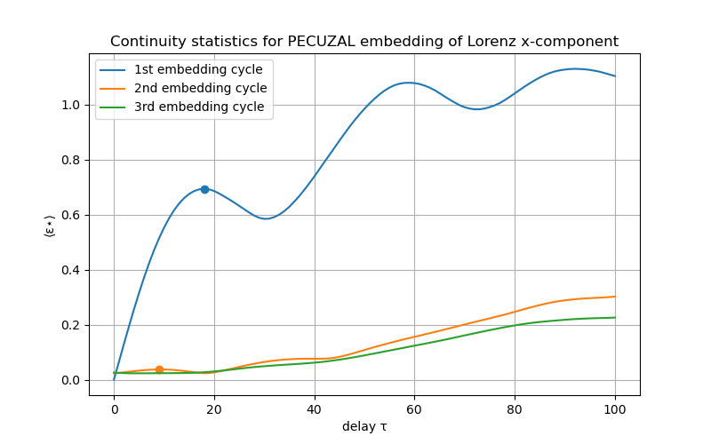
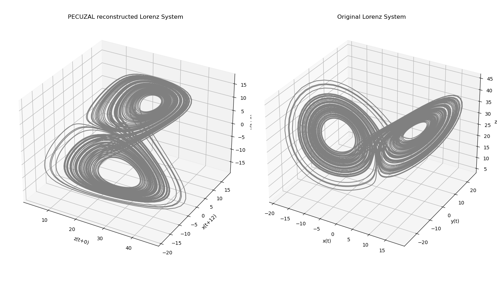

Unified Optimal Embedding
Unified approaches try to create an optimal embedding by in parallel optimizing what combination of delay times and embedding dimensions suits best.
In addition, the unified approaches are the only ones that can accommodate multi-variate inputs. This means that if you have multiple measured input timeseries, you should be able to take advantage of all of them for the best possible embedding of the dynamical system's set.
An example
In following we illustrate the the most recent unified optimal embedding method, called PECUZAL, on three examples. We start with a univariate case, i.e. we only feed in one time series, here the x-component of the Lorenz system.
using DynamicalSystems
lo = Systems.lorenz([1.0, 1.0, 50.0])
tr = trajectory(lo, 100; dt = 0.01, Ttr = 10)
s = vec(tr[:, 1]) # input timeseries = x component of lorenz
theiler = estimate_delay(s, "mi_min") # estimate a Theiler window
Tmax = 100 # maximum possible delay
Y, τ_vals, ts_vals, Ls , εs = pecuzal_embedding(s; τs = 0:Tmax , w = theiler)
println(τ_vals)
println(ts_vals)
println(Ls)Algorithm stopped due to minimum L-value reached. VALID embedding achieved ✓. [0, 18, 9] [1, 1, 1] [-2.8725894723648135, -2.9978353120801096, -2.9458665448810084]
The output reveals that PECUZAL suggests a 3-dimensional embedding out of the un-lagged time series as the 1st component of the reconstruction, the time series lagged by 18 samples as the 2nd component and the time series lagged by 9 samples as the 3rd component. The minimum obtained L-value in the 3rd embedding cycle has been ~-2.63, after which the algorithm breaks.
using PyPlot
figure(figsize=(14., 8.))
subplot(1,2,1, projection="3d")
plot3D(Y[:,1], Y[:,2], Y[:,3],"gray")
title("PECUZAL reconstructed x-component of Lorenz System")
xlabel("x(t+$(τ_vals[1]))")
ylabel("x(t+$(τ_vals[2]))")
zlabel("x(t+$(τ_vals[3]))")
grid()
subplot(1,2,2, projection="3d")
plot3D(tr[:,1], tr[:,2], tr[:,3],"gray")
title("Original Lorenz System")
xlabel("x(t)")
ylabel("y(t)")
zlabel("z(t)")
grid()
tight_layout()
We can also look at the output of the low-level function leading to the results, here the continuity statistic.
using PyPlot
figure(figsize=(8., 5.))
plot(εs[:,1], label="1st embedding cycle")
scatter([τ_vals[2]], [εs[τ_vals[2],1]])
plot(εs[:,2], label="2nd embedding cycle")
scatter([τ_vals[3]], [εs[τ_vals[3],2]])
plot(εs[:,3], label="3rd embedding cycle")
title("Continuity statistics for PECUZAL embedding of Lorenz x-component")
xlabel("delay τ")
ylabel("⟨ε⋆⟩")
legend(loc="upper left")
grid()
Similar to the approach in the preceding example, we now highlight the capability of the PECUZAL embedding method for a multivariate input. The idea is now to feed in all three time series to the algorithm, even though this is a very far-from-reality example. We already have an adequate representation of the system we want to reconstruct, namely the three time series from the numerical integration. But let us see what PECUZAL suggests for a reconstruction.
# compute Theiler window
w1 = estimate_delay(tr[:,1], "mi_min")
w2 = estimate_delay(tr[:,2], "mi_min")
w3 = estimate_delay(tr[:,3], "mi_min")
w = maximum(hcat(w1,w2,w3))
Y_m, τ_vals_m, ts_vals_m, Ls_m , εs_m = pecuzal_embedding(tr; τs = 0:Tmax , w = theiler)
println(τ_vals_m)
println(ts_vals_m)
println(Ls_m)Algorithm stopped due to minimum L-value reached. VALID embedding achieved ✓. [0, 12, 0] [3, 1, 1] [-2.5231456900201734, -2.8548327001280525, -2.813549538642902]
PECUZAL offers a 3-dimensional embedding using the un-lagged z- and x-component as 1st and 3rd component of the reconstruction vectors, as well as the x-component lagged by 12 samples.
ts_str = ["x", "y", "z"]
figure(figsize=(14., 8.))
subplot(1,2,1, projection="3d")
plot3D(Y_m[:,1], Y_m[:,2], Y_m[:,3],"gray")
title("PECUZAL reconstructed Lorenz System")
xlabel("$(ts_str[ts_vals_m[1]])(t+$(τ_vals_m[1]))")
ylabel("$(ts_str[ts_vals_m[2]])(t+$(τ_vals_m[2]))")
zlabel("$(ts_str[ts_vals_m[3]])(t+$(τ_vals_m[3]))")
grid()
subplot(1,2,2, projection="3d")
plot3D(tr[:,1], tr[:,2], tr[:,3],"gray")
title("Original Lorenz System")
xlabel("x(t)")
ylabel("y(t)")
zlabel("z(t)")
grid()
tight_layout()
Finally we show what PECUZAL does with a non-deterministic source:
using Random
# Dummy input
d1 = randn(1000)
d2 = rand(1000)
Tmax = 100
dummy_set = Dataset(hcat(d1,d2))
w1 = estimate_delay(d1, "mi_min")
w2 = estimate_delay(d2, "mi_min")
theiler = minimum(hcat(w1,w2))
Y_d, τ_vals_d, ts_vals_d, Ls_d , ε★_d = pecuzal_embedding(dummy_set; τs = 0:Tmax , w = theiler)
size(Y_d)(1000,)
So, no (proper) embedding is done.
All unified algorithms
Several algorithms have been created to implement a unified approach to delay coordinates embedding. You can find some implementations below:
DelayEmbeddings.pecora — Functionpecora(s, τs, js; kwargs...) → ⟨ε★⟩, ⟨Γ⟩Compute the (average) continuity statistic ⟨ε★⟩ and undersampling statistic ⟨Γ⟩ according to Pecora et al.[Pecoral2007] (A unified approach to attractor reconstruction), for a given input s (timeseries or Dataset) and input generalized embedding defined by (τs, js), according to genembed. The continuity statistic represents functional independence between the components of the existing embedding and one additional timeseries. The returned results are matrices with size TxJ.
Keyword arguments
delays = 0:50: Possible time delay valuesdelays(in sampling time units). For each of theτ's indelaysthe continuity-statistic⟨ε★⟩gets computed. Ifundersampling = true(see further down), also the undersampling statistic⟨Γ⟩gets returned for all considered delay values.J = 1:dimension(s): calculate for all timeseries indices inJ. If inputsis a timeseries, this is always just 1.samplesize::Real = 0.1: determine the fraction of all phase space points (=length(s)) to be considered (fiducial points v) to average ε★ to produce⟨ε★⟩, ⟨Γ⟩K::Int = 13: the amount of nearest neighbors in the δ-ball (read algorithm description). Must be at least 8 (in order to gurantee a valid statistic).⟨ε★⟩is computed taking the minimum result over allk ∈ K.metric = Chebyshev(): metrix with which to find nearest neigbhors in the input embedding (ℝᵈ space,d = length(τs)).w = 1: Theiler window (neighbors in time with indexwclose to the point, that are excluded from being true neighbors).w=0means to exclude only the point itself, and no temporal neighbors.undersampling = false: whether to calculate the undersampling statistic or not (if not, zeros are returned for⟨Γ⟩). Calculating⟨Γ⟩is thousands of times slower than⟨ε★⟩.db::Int = 100: Amount of bins used into calculating the histograms of each timeseries (for the undersampling statistic).α::Real = 0.05: The significance level for obtaining the continuity statisticp::Real = 0.5: The p-parameter for the binomial distribution used for the computation of the continuity statistic.
Description
Notice that the full algorithm is too large to discuss here, and is written in detail (several pages!) in the source code of pecora.
DelayEmbeddings.uzal_cost — Functionuzal_cost(Y::Dataset; kwargs...) → LCompute the L-statistic L for input dataset Y according to Uzal et al.[Uzal2011], based on theoretical arguments on noise amplification, the complexity of the reconstructed attractor and a direct measure of local stretch which constitutes an irrelevance measure. It serves as a cost function of a state space trajectory/embedding and therefore allows to estimate a "goodness of a embedding" and also to choose proper embedding parameters, while minimizing L over the parameter space. For receiving the local cost function L_local (for each point in state space - not averaged), use uzal_cost_local(...).
Keyword arguments
samplesize = 0.5: Number of considered fiducial points v as a fraction of input state space trajectoryY's length, in order to average the conditional variances and neighborhood sizes (read algorithm description) to produceL.K = 3: the amount of nearest neighbors considered, in order to compute σ_k^2 (read algorithm description). If given a vector, minimum result over allk ∈ Kis returned.metric = Euclidean(): metric used for finding nearest neigbhors in the input state space trajectory `Y.w = 1: Theiler window (neighbors in time with indexwclose to the point, that are excluded from being true neighbors).w=0means to exclude only the point itself, and no temporal neighbors.Tw = 40: The time horizon (in sampling units) up to which E_k^2 gets computed and averaged over (read algorithm description).
Description
The L-statistic is based on theoretical arguments on noise amplification, the complexity of the reconstructed attractor and a direct measure of local stretch which constitutes an irrelevance measure. Technically, it is the logarithm of the product of σ-statistic and a normalization statistic α:
L = log10(σ*α)
The σ-statistic is computed as follows. σ = √σ² = √(E²/ϵ²). E² approximates the conditional variance at each point in state space and for a time horizon T ∈ Tw, using K nearest neighbors. For each reference point of the state space trajectory, the neighborhood consists of the reference point itself and its K+1 nearest neighbors. E² measures how strong a neighborhood expands during T time steps. E² is averaged over many time horizons T = 1:Tw. Consequently, ϵ² is the size of the neighborhood at the reference point itself and is defined as the mean pairwise distance of the neighborhood. Finally, σ² gets averaged over a range of reference points on the attractor, which is controlled by samplesize. This is just for performance reasons and the most accurate result will obviously be gained when setting samplesize=1.0
The α-statistic is a normalization factor, such that σ's from different embeddings can be compared. α² is defined as the inverse of the sum of the inverse of all ϵ²'s for all considered reference points.
DelayEmbeddings.garcia_almeida_embedding — Functiongarcia_almeida_embedding(s; kwargs...) → Y, τ_vals, ts_vals, FNNs ,NSA unified approach to properly embed a time series (Vector type) or a set of time series (Dataset type) based on the papers of Garcia & Almeida [Garcia2005a],[Garcia2005b].
Keyword arguments
τs= 0:50: Possible delay valuesτs(in sampling time units). For each of theτs's the N-statistic gets computed.w::Int = 1: Theiler window (neighbors in time with indexwclose to the point, that are excluded from being true neighbors).w=0means to exclude only the point itself, and no temporal neighbors.r1 = 10: The threshold, which defines the factor of tolerable stretching for the d_E1-statistic.r2 = 2: The threshold for the tolerable relative increase of the distance between the nearest neighbors, when increasing the embedding dimension.fnn_thres= 0.05: A threshold value defining a sufficiently small fraction of false nearest neighbors, in order to the let algorithm terminate and stop the embedding procedure (`0 ≤ fnn_thres < 1).T::Int = 1: The forward time step (in sampling units) in order to compute thed_E2-statistic (see algorithm description). Note that in the paper this is not a free parameter and always set toT=1.metric = Euclidean(): metric used for finding nearest neigbhors in the input phase space trajectoryY.max_num_of_cycles = 50: The algorithm will stop after that many cycles no matter what.
Description
The method works iteratively and gradually builds the final embedding vectors Y. Based on the N-statistic the algorithm picks an optimal delay value τ for each embedding cycle as the first local minimum of N. In case of multivariate embedding, i.e. when embedding a set of time series (s::Dataset), the optimal delay value τ is chosen as the first minimum from all minimum's of all considered N-statistics for each embedding cycle. The range of considered delay values is determined in τs and for the nearest neighbor search we respect the Theiler window w. After each embedding cycle the FNN-statistic FNNs [Hegger1999][Kennel1992] is being checked and as soon as this statistic drops below the threshold fnn_thres, the algorithm breaks. In order to increase the practability of the method the algorithm also breaks, when the FNN-statistic FNNs increases . The final embedding vector is stored in Y (Dataset). The chosen delay values for each embedding cycle are stored in the τ_vals and the according time series number chosen for the according delay value in τ_vals is stored in ts_vals. For univariate embedding (s::Vector) ts_vals is a vector of ones of length τ_vals, because there is simply just one time series to choose from. The function also returns the N-statistic NS for each embedding cycle as an Array of Vectors.
Notice that we were not able to reproduce the figures from the papers with our implementation (which nevertheless we believe is the correct one).
DelayEmbeddings.mdop_embedding — Functionmdop_embedding(s::Vector; kwargs...) → Y, τ_vals, ts_vals, FNNs, βSMDOP (for "maximizing derivatives on projection") is a unified approach to properly embed a timeseries or a set of timeseries (Dataset) based on the paper of Chetan Nichkawde [Nichkawde2013].
Keyword arguments
τs= 0:50: Possible delay valuesτs. For each of theτs's the β-statistic gets computed.w::Int = 1: Theiler window (neighbors in time with indexwclose to the point, that are excluded from being true neighbors).w=0means to exclude only the point itself, and no temporal neighbors.fnn_thres::Real= 0.05: A threshold value defining a sufficiently small fraction of false nearest neighbors, in order to the let algorithm terminate and stop the embedding procedure (`0 ≤ fnn_thres < 1).r::Real = 2: The threshold for the tolerable relative increase of the distance between the nearest neighbors, when increasing the embedding dimension.max_num_of_cycles = 50: The algorithm will stop after that many cycles no matter what.
Description
The method works iteratively and gradually builds the final embedding Y. Based on the beta_statistic the algorithm picks an optimal delay value τ for each embedding cycle as the global maximum of β. In case of multivariate embedding, i.e. when embedding a set of time series (s::Dataset), the optimal delay value τ is chosen as the maximum from all maxima's of all considered β-statistics for each possible timeseries. The range of considered delay values is determined in τs and for the nearest neighbor search we respect the Theiler window w.
After each embedding cycle the FNN-statistic FNNs [Hegger1999][Kennel1992] is being checked and as soon as this statistic drops below the threshold fnn_thres, the algorithm terminates. In order to increase the practability of the method the algorithm also terminates when the FNN-statistic FNNs increases.
The final embedding is returned as Y. The chosen delay values for each embedding cycle are stored in the τ_vals and the according timeseries index chosen for the the respective according delay value in τ_vals is stored in ts_vals. βS, FNNs are returned for clarity and double-checking, since they are computed anyway. In case of multivariate embedding, βS will store all β-statistics for all available time series in each embedding cycle. To double-check the actual used β-statistics in an embedding cycle 'k', simply βS[k][:,ts_vals[k+1]].
DelayEmbeddings.pecuzal_embedding — Functionpecuzal_embedding(s; kwargs...) → 𝒟, τ_vals, ts_vals, Ls, ⟨ε★⟩A unified approach to properly embed a time series or a set of time series (Dataset) based on the ideas of Pecora et al. [Pecoral2007] and Uzal et al. [Uzal2011]. For a detailled description of the algorithm see Kraemer et al. [Kraemer2020].
Keyword arguments
τs = 0:50: Possible delay valuesτs(in sampling time units). For each of theτs's the continuity statistic ⟨ε★⟩ gets computed and further processed in order to find optimal delaysτᵢfor each embedding cyclei(read algorithm description).w::Int = 1: Theiler window (neighbors in time with indexwclose to the point, that are excluded from being true neighbors).w=0means to exclude only the point itself, and no temporal neighbors.samplesize::Real = 1: determine the fraction of all phase space points (=length(s)) to be considered (fiducial points v) to average ε★, in order to produce⟨ε★⟩.K::Int = 13: the amount of nearest neighbors in the δ-ball (read algorithm description). Must be at least 8 (in order to gurantee a valid statistic).⟨ε★⟩is computed taking the minimum result over allk ∈ K.KNN::Int = 3: the amount of nearest neighbors considered, in order to compute σ². If given a vector, the minimum result over allknn ∈ KNNis returned.Tw::Int = 4*w: the maximal considered time horizon for obtaining σ² (read algorithm description.α::Real = 0.05: The significance level for obtaining the continuity statisticp::Real = 0.5: The p-parameter for the binomial distribution used for the computation of the continuity statistic ⟨ε★⟩.max_cycles = 50: The algorithm will stop after that many cycles no matter what.
Description
The method works iteratively and gradually builds the final embedding vectors 𝒟. Based on the ⟨ε★⟩-statistic pecora the algorithm picks an optimal delay value τᵢ for each embedding cycle i. For achieving that, we take the inpute time series s and compute the continuity statistic ⟨ε★⟩. 1. Each local maxima in ⟨ε★⟩ is used for constructing a candidate embedding trajectory 𝒟_trial with a delay corresponding to that specific peak in ⟨ε★⟩. 2. We then compute the L-statistic uzal_cost for 𝒟_trial. 3. We pick the peak/τ-value, for which L is minimal and construct the actual embedding trajectory 𝒟_actual (steps 1.-3. correspond to an embedding cycle). 4. We repeat steps 1.-3. with 𝒟_actual as input and stop the algorithm when L can not be reduced anymore. 𝒟_actual -> 𝒟.
In case of multivariate embedding, i.e. when embedding a set of M time series (s::Dataset), in each embedding cycle the continuity statistic ⟨ε★⟩ gets computed for all M time series available. The optimal delay value τ in each embedding cycle is chosen as the peak/τ-value for which L is minimal under all available peaks and under all M ⟨ε★⟩'s. In the first embedding cycle there will be M² different ⟨ε★⟩'s to consider, since it is not clear a priori which time series of the input should consitute the first component of the embedding vector and form 𝒟_actual.
The range of considered delay values is determined in τs and for the nearest neighbor search we respect the Theiler window w. The final embedding vector is stored in 𝒟 (Dataset). The chosen delay values for each embedding cycle are stored in τ_vals and the according time series numbers chosen for each delay value in τ_vals are stored in ts_vals. For univariate embedding (s::Vector) ts_vals is a vector of ones of length τ_vals, because there is simply just one time series to choose from. The function also returns the L-statistic Ls for each embedding cycle and the continuity statistic ⟨ε★⟩ as an Array of Vectors.
For distance computations the Euclidean norm is used.
Low-level functions of unified approach
DelayEmbeddings.n_statistic — Functionn_statistic(Y, s; kwargs...) → N, d_E1Perform one embedding cycle according to the method proposed in [Garcia2005a] for a given phase space trajectory Y (of type Dataset) and a time series s (of typeVector). Return the proposed N-StatisticNand all nearest neighbor distancesd_E1for each point of the input phase space trajectoryY. Note thatY` is a single time series in case of the first embedding cycle.
Keyword arguments
τs= 0:50: Considered delay valuesτs(in sampling time units). For each of theτs's the N-statistic gets computed.r = 10: The threshold, which defines the factor of tolerable stretching for the d_E1-statistic (see algorithm description).T::Int = 1: The forward time step (in sampling units) in order to compute thed_E2-statistic (see algorithm description). Note that in the paper this is not a free parameter and always set toT=1.w::Int = 0: Theiler window (neighbors in time with indexwclose to the point, that are excluded from being true neighbors).w=0means to exclude only the point itself, and no temporal neighbors. Note that in the paper this is not a free parameter and alwaysw=0.metric = Euclidean(): metric used for finding nearest neigbhors in the input phase space trajectoryY.
Description
For a range of possible delay values τs one constructs a temporary embedding matrix. That is, one concatenates the input phase space trajectory Y with the τ-lagged input time series s. For each point on the temporary trajectory one computes its nearest neighbor, which is denoted as the d_E1-statistic for a specific τ. Now one considers the distance between the reference point and its nearest neighbor T sampling units ahead and calls this statistic d_E2. [Garcia2005a] strictly use T=1, so they forward each reference point and its corresponding nearest neighbor just by one (!) sampling unit. Here it is a free parameter.
The N-statistic is then the fraction of d_E2/d_E1-pairs which exceed a threshold r.
Plotted vs. the considered τs-values it is proposed to pick the τ-value for this embedding cycle as the value, where N has its first local minimum.
DelayEmbeddings.beta_statistic — Functionbeta_statistic(Y::Dataset, s::Vector) [, τs, w]) → βCompute the β-statistic β for input state space trajectory Y and a timeseries s according to Nichkawde [Nichkawde2013], based on estimating derivatives on a projected manifold. For a range of delay values τs, β gets computed and its maximum over all considered τs serves as the optimal delay considered in this embedding cycle.
Arguments τs, w as in mdop_embedding.
Description
The β-statistic is based on the geometrical idea of maximal unfolding of the reconstructed attractor and is tightly related to the False Nearest Neighbor method ([Kennel1992]). In fact the method eliminates the maximum amount of false nearest neighbors in each embedding cycle. The idea is to estimate the absolute value of the directional derivative with respect to a possible new dimension in the reconstruction process, and with respect to the nearest neighbor, for all points of the state space trajectory:
ϕ'(τ) = Δϕd(τ) / Δxd
Δxd is simply the Euclidean nearest neighbor distance for a reference point with respect to the given Theiler window w. Δϕd(τ) is the distance of the reference point to its nearest neighbor in the one dimensional time series s, for the specific τ. Δϕ_d(τ) = |s(i+τ)-s(j+τ)|, with i being the index of the considered reference point and j the index of its nearest neighbor.
Finally,
β = log β(τ) = ⟨log₁₀ ϕ'(τ)⟩ ,
with ⟨.⟩ being the mean over all reference points. When one chooses the maximum of β over all considered τ's, one obtains the optimal delay value for this embedding cycle. Note that in the first embedding cycle, the input state space trajectory Y can also be just a univariate time series.
DelayEmbeddings.mdop_maximum_delay — Functionmdop_maximum_delay(s, tw = 1:50, samplesize = 1.0)) -> τ_max, LCompute an upper bound for the search of optimal delays, when using mdop_embedding mdop_embedding or beta_statistic beta_statistic.
Description
The input time series s gets embedded with unit lag and increasing dimension, for dimensions (or time windows) tw (RangeObject). For each of such a time window the L-statistic from Uzal et al. [Uzal2011] will be computed. samplesize determines the fraction of points to be considered in the computation of L (see uzal_cost). When this statistic reaches its global minimum the maximum delay value τ_max gets returned. When s is a multivariate Dataset, τ_max will becomputed for all timeseries of that Dataset and the maximum value will be returned. The returned L-statistic has size (length(tw), size(s,2)).
- Pecora2007Pecora, L. M., Moniz, L., Nichols, J., & Carroll, T. L. (2007). A unified approach to attractor reconstruction. Chaos 17(1).
- Uzal2011Uzal, L. C., Grinblat, G. L., Verdes, P. F. (2011). Optimal reconstruction of dynamical systems: A noise amplification approach. Physical Review E 84, 016223.
- Garcia2005aGarcia, S. P., Almeida, J. S. (2005). Nearest neighbor embedding with different time delays. Physical Review E 71, 037204.
- Garcia2005bGarcia, S. P., Almeida, J. S. (2005). Multivariate phase space reconstruction by nearest neighbor embedding with different time delays. Physical Review E 72, 027205.
- Nichkawde2013Nichkawde, Chetan (2013). Optimal state-space reconstruction using derivatives on projected manifold. Physical Review E 87, 022905.
- Hegger1999Hegger, Rainer and Kantz, Holger (1999). Improved false nearest neighbor method to detect determinism in time series data. Physical Review E 60, 4970.
- Kennel1992Kennel, M. B., Brown, R., Abarbanel, H. D. I. (1992). Determining embedding dimension for state-space reconstruction using a geometrical construction. Phys. Rev. A 45, 3403.
- Pecora2007Pecora, L. M., Moniz, L., Nichols, J., & Carroll, T. L. (2007). A unified approach to attractor reconstruction. Chaos 17(1).
- Uzal2011Uzal, L. C., Grinblat, G. L., Verdes, P. F. (2011). Optimal reconstruction of dynamical systems: A noise amplification approach. Physical Review E 84, 016223.
- Kraemer2020Kraemer, K.H., Datseris, G., Kurths, J., Kiss, I.Z., Ocampo-Espindola, Marwan, N. (2020). A unified and automated approach to attractor reconstruction. arXiv:2011.07040.
- Garcia2005aGarcia, S. P., Almeida, J. S. (2005). Nearest neighbor embedding with different time delays. Physical Review E 71, 037204.
- Nichkawde2013Nichkawde, Chetan (2013). Optimal state-space reconstruction using derivatives on projected manifold. Physical Review E 87, 022905.
- Kennel1992Kennel, M. B., Brown, R., Abarbanel, H. D. I. (1992). Determining embedding dimension for state-space reconstruction using a geometrical construction. Phys. Rev. A 45, 3403.
- Nichkawde2013Nichkawde, Chetan (2013). Optimal state-space reconstruction using derivatives on projected manifold. Physical Review E 87, 022905.
- Uzal2011Uzal, L. C., Grinblat, G. L., Verdes, P. F. (2011). Optimal reconstruction of dynamical systems: A noise amplification approach. Physical Review E 84, 016223.